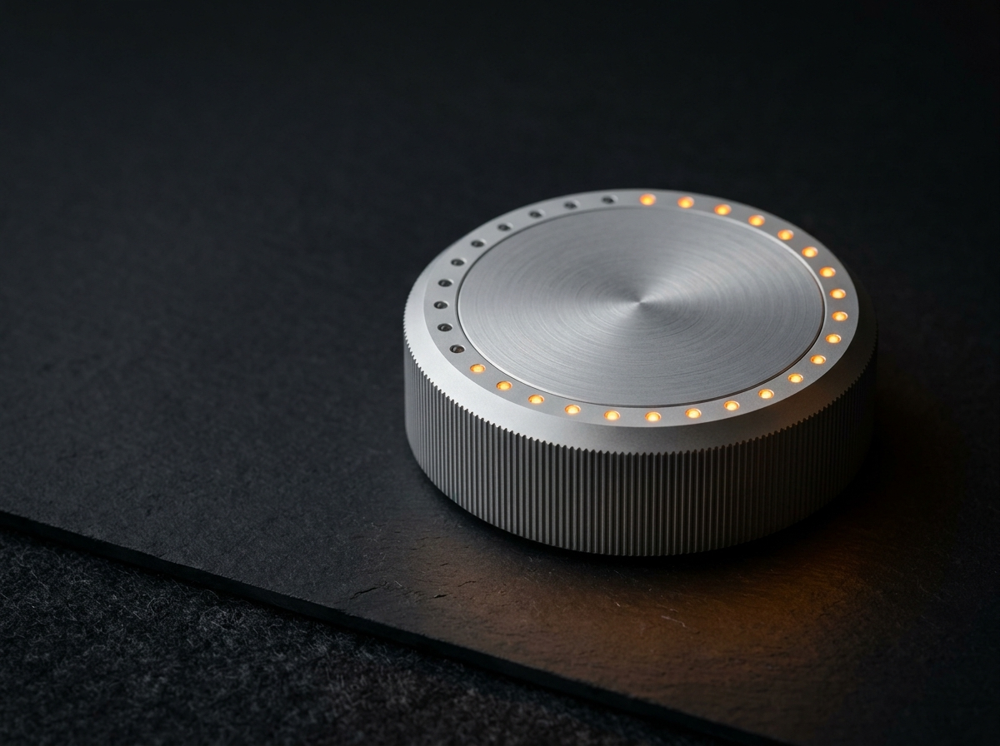
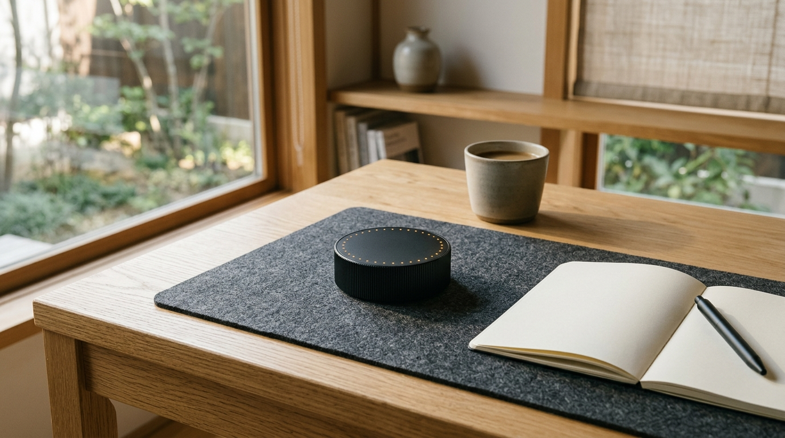
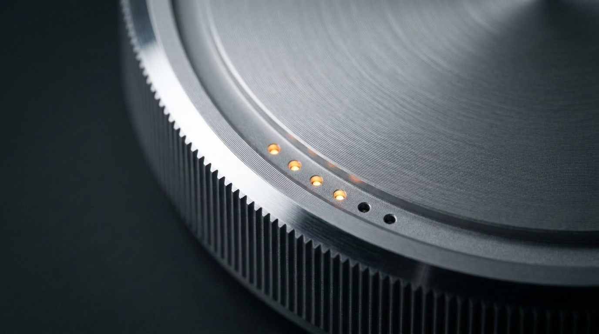
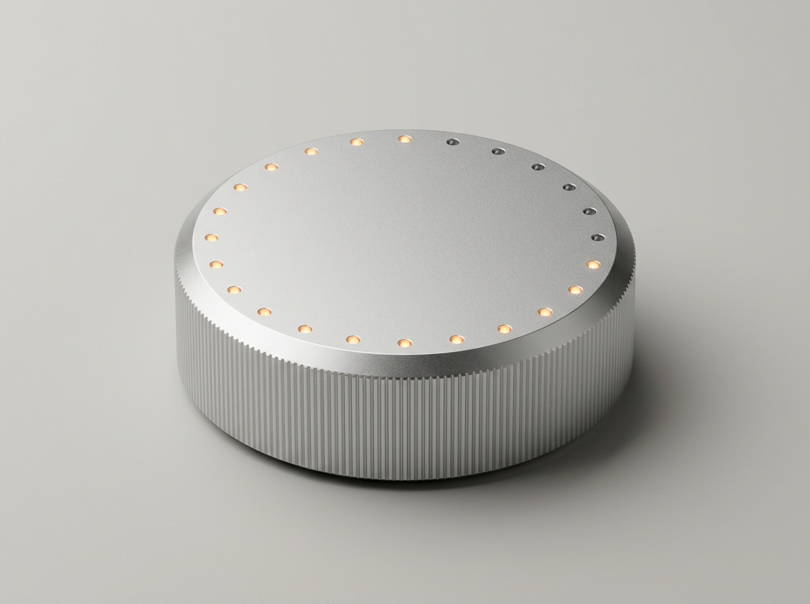
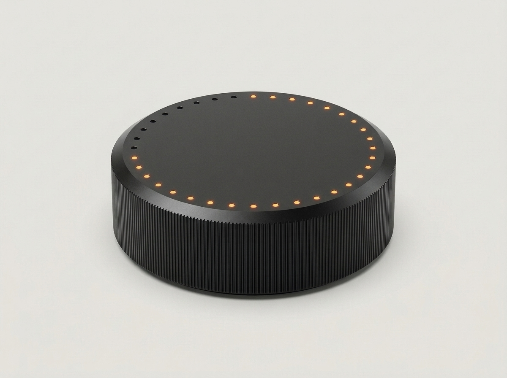
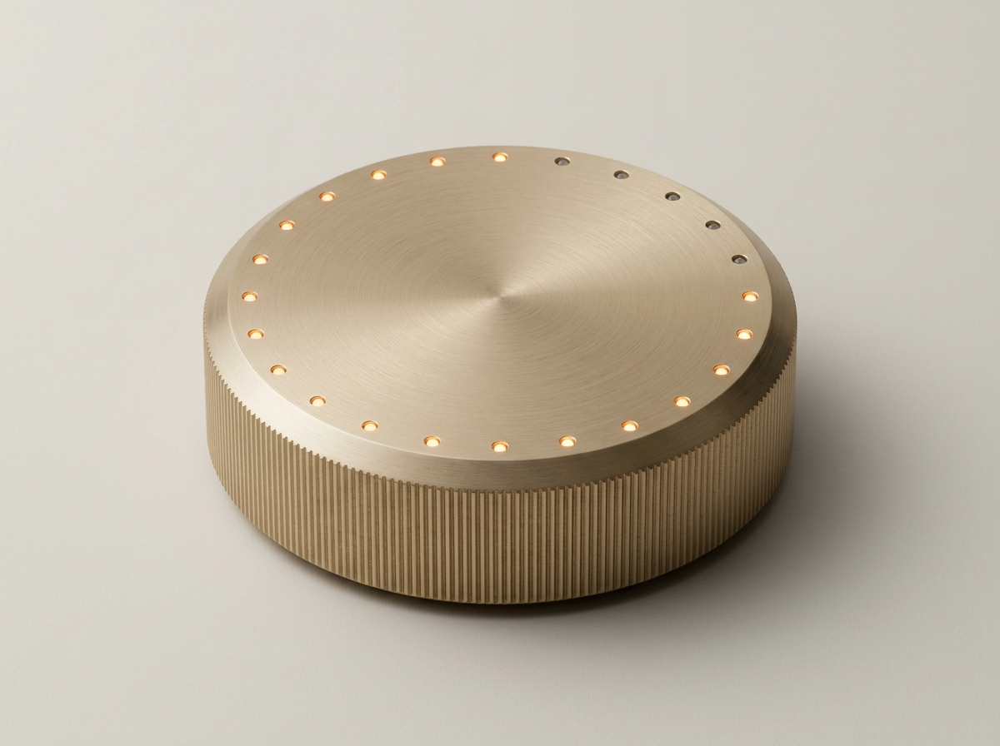

数字を見ないという自由
刻一刻と減るデジタルの秒数は、思考に小さな焦りを生みます。KOKU-01は天面から表示を一切排し、外周24灯の柔らかな光だけで「あとどれくらいか」を感覚的に伝えます。
無画面デスクトップ集中タイマー＆環境音ダイヤル『KOKU-01』。
スマートフォンも、専用アプリもいらない。
CNC削り出しの重み、36の磁気クリック、外周24灯の淡い光が、思考を深い静寂へと導きます。

01 / PHILOSOPHY
タイマーをセットするためだけに手に取ったスマートフォンで、気づけば通知を追いかけている。
SOU DESIGN LABは、その小さな断絶を終わらせるために『KOKU-01』を設計しました。画面も、Bluetoothも、アプリもない。ただ回して、押す。それだけの道具です。

刻一刻と減るデジタルの秒数は、思考に小さな焦りを生みます。KOKU-01は天面から表示を一切排し、外周24灯の柔らかな光だけで「あとどれくらいか」を感覚的に伝えます。
ネオジム磁石による36ステップの磁気ラチェット機構。指先に伝わる澄んだクリック感と、アルミ無垢材の210gの質量が、「今から集中する」という意識の切り替えを身体に刻みます。
筐体内部に音響チャンバーとスピーカーを内蔵。タイマー作動中、柔らかな「雨音」または「ホワイトノイズ」を机上に広げ、周囲の雑音から意識を静かに切り離します。
02 / INTERACTIVE DEMO — EXPERIENCE
ダイヤルの外周をドラッグして時間を合わせ、天面を押してスタートしてみてください。36ステップの磁気クリック音、環境音、24灯LEDリングが減り切って完了するまでの一連の流れを体験できます。
03 / ENGINEERING & CRAFT
毎日、思考のいちばん近くに触れるものだからこそ。プラスチックの軽さではなく、金属無垢材と磁気機構が織りなす永続的な手触りを追求しました。

物理的なバネ摩耗のない非接触マグネット構造を採用。1周36段階の均一で澄んだクリック感が、何年使っても劣化せずに持続します。
精密ドリル加工された微細な導光孔から、暖色系の光が柔らかく滲み出ます。視界の端でも残り時間を直感でき、夜のデスクでも眩しすぎません。
背面に控えめに収まるUSB-Cポートから約2時間で満充電。画面を持たない省電力設計により、1日2時間の使用で最大30日間ケーブルレスで稼働します。
Wi-FiもBluetoothも搭載しません。ペアリングの手間、OSアップデートによる陳腐化、通知の侵入を構造的に排除。10年後も箱から出してすぐ使える道具であり続けます。
04 / THREE FINISHES
素材本来の質感を活かしたアルマイト2色に加え、経年変化を楽しむ数量限定の「真鍮リミテッド」をご用意しました。

STANDARD微細なブラスト処理とクリアアルマイトによる澄んだ金属光沢。アルミの素地を最も端正に味わえる定番モデル。

STANDARD光を静かに吸収する深みのあるマットブラックアルマイト。外周24灯の暖色LEDが最も印象的に浮かび上がります。

LIMITED · +¥3,000ヘアライン仕上げを施した無塗装真鍮のリミテッドモデル。指先が触れるほどに深い飴色へと育つ、あなただけのエイジングを。
05 / INTERACTIVE DEMO — PRE-ORDER SIMULATOR
カラー・予約プラン・オプションを選ぶと、割引額と合計金額がリアルタイムに反映されます。先行予約分は2027年3月より順次発送予定です。
06 / SPECIFICATIONS
07 / FAQ
はい。外周24灯のLEDリングが残り時間を視覚的に示します。時間設定時はダイヤルのクリック感とLEDの点灯数（60分で全24灯）で直感的に合わせられ、開始後は24灯が均等に消えていくため、時計の数字を追わずに「残りの量」を静かに把握できます。
集中しようとした瞬間にスマートフォンへ手を伸ばす習慣を断ち切るためです。Bluetoothやアプリを省くことで、通知の誘惑・バッテリー消費・将来のアプリ終了リスクをすべてなくし、机の上で独立して働き続ける道具を目指しました。
デスクのパーソナルスペースをそっと包む穏やかな音量帯にチューニングされています。もちろん「無音モード」も備えているため、図書館やオフィスでも光と触覚だけで静かにお使いいただけます。
超早割プランは初回限定枠のため終了いたしました。初回生産分が完売した「専用レザーキャリングケース」は、2027年春の一般販売時に再販を予定しております。
KOKU-01底面の滑り止めだけでも安定しますが、専用フェルトデスクマット（+¥2,400）を敷くことで、机との共振を抑え、内蔵スピーカーの雨音やホワイトノイズがより柔らかく響きます。
PRE-ORDER RESERVATION
RESERVATION CONFIRMED (DEMO)
様、ご予約ありがとうございます。
2027年3月の順次発送に向けてご案内をお送りいたします（体験デモ）。